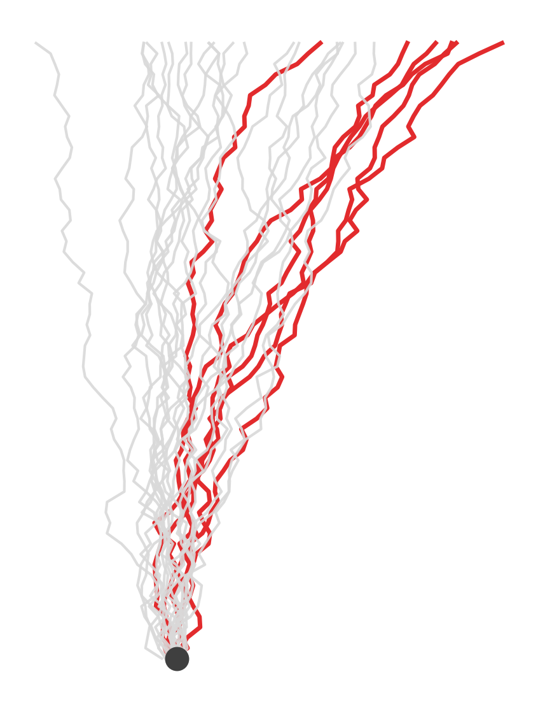
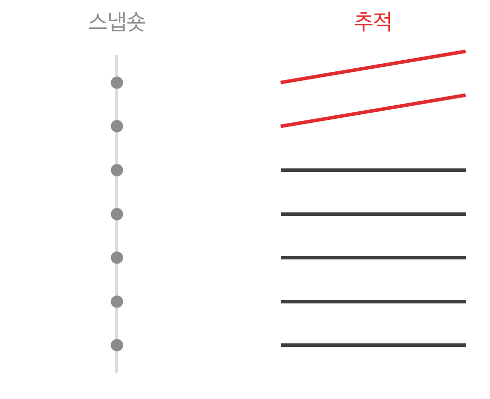
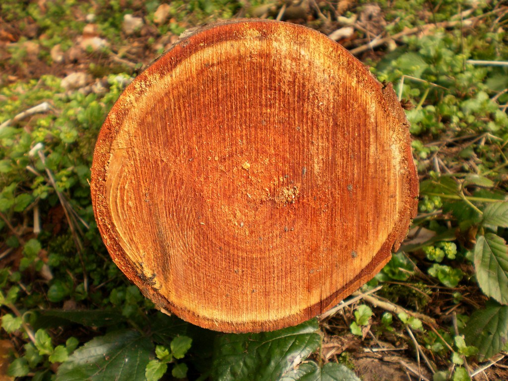

03
데이톨로지 — 데이터로 읽는 인간과 사회
시간을 가로지르는
데이터
코호트 · 태아 프로그래밍 · 팬데믹의 히든 이펙트

CONTENTS
시간을
가로지르는
데이터

학습 목표
목표 1
코호트 연구와 횡단 조사의 차이 설명
목표 2
“지금의 데이터가 수십 년 뒤를 예고”하는 관점으로 팬데믹의 장기 영향 추론
오늘의 질문
엄마 배 속에 있던 9개월이
60년 뒤 심장병 위험을
결정할 수 있을까?
코호트 연구
[비유] 같은 해 심은 묘목
사진: The Alliance of Religions and Conservation / CC BY 2.0
같은 해 심은 묘목 = 코호트
- 같은 시기에 출발한 한 집단
- 해마다 같은 나무를 다시 재기
- 어떤 묘목이 왜 다르게 자랐는지 추적
- 한 번 재고 끝 = 횡단 조사
코호트 연구
코호트(cohort): 같은 경험을 한 집단을 오래 추적
코호트 연구
20세기의 대표 코호트
영국 · 1946
출생 코호트
- 1946년 3월 한 주에 태어난 아이들
- 세계 최장기 출생 코호트 중 하나
미국 · 1948~
프레이밍햄 심장 연구
- 한 마을 주민의 장기 추적
- 심혈관 질환 위험 요인 연구의 출발점
영국 · 1958, 1970
후속 출생 코호트
- 세대별 비교 가능
- 교육·건강·소득의 생애 경로
횡단 조사로는 볼 수 없는 것 = 원인과 결과 사이의 시간
바커와 태아 프로그래밍
[비유] 나이테

사진: Out of the Fire Blog / CC BY 2.0
나이테 = 초기 환경의 흔적
- 가장 안쪽 고리 = 어린 시절의 환경
- 그 위로 평생의 고리가 쌓이는 구조
- 태아기 영양 = 몸의 가장 안쪽 고리
- 오래된 기록 속에서 다시 읽기
바커와 태아 프로그래밍
출생 기록 × 수십 년 뒤 건강 = DOHaD 가설
바커와 태아 프로그래밍
가설을 단단하게 만든 데이터
네덜란드 굶주림의 겨울
1944~45 기근 시기에 태아였던 사람들
→ 출생 코호트로 수십 년 추적
→ 성인기 건강 차이 연구
상관 ≠ 인과
출생 체중과 질병의 동행만으로는 원인 단정 불가
→ 여러 코호트·자연 실험의 반복 확인
교훈: 평범한 출생 기록부가 수십 년 뒤 혁신적 가설의 재료
팬데믹의 히든 이펙트
[비유] 빙산

사진: NOAA's National Ocean Service / CC BY 2.0
빙산 = 팬데믹의 효과
- 물 위 = 확진·사망 같은 직접 효과
- 물 아래 = 늦게 드러나는 효과
- 보이지 않는 부분이 더 큰 구조
- 물 아래를 보는 도구 = 장기 추적 데이터
팬데믹의 히든 이펙트
히든 이펙트(hidden effect): 시간이 지나 드러나는 효과
팬데믹의 히든 이펙트
“코로나 세대”를 지금부터 추적해야 하는 이유
태아·영유아
출발점
- 출생률 변화
- 태아기 스트레스
- 사회성 발달
학생
배움
- 학습 결손
- 원격 수업 경험
- 또래 관계
청년·성인
삶
- 정신건강
- 일자리 출발
- 생활 습관 변화
활동 · 정리 및 확인 문제
활동 (60분): 코로나 세대의 히든 이펙트 가설 세우기
STEP 1 · 10분
집단 고르기
- 2020~22년 출생아
- 초등 입학생 · 대학 신입생
- 신입 직장인
STEP 2 · 30분
가설·설계
- “20년 뒤 어떤 차이?” 가설 2개
- 변수, 추적 주기, 비교집단
STEP 3 · 20분
윤리 체크·발표
- 이 데이터를 모을 때의 프라이버시 문제
- 팀별 3분 발표
활동 · 정리 및 확인 문제
토론 질문
① 상관관계가 인과를 말하지 않는다면, 바커의 발견은 어떻게 설득력을 얻었을까?
② 지금 기록하지 않아서 30년 뒤 후회할 데이터
활동 · 정리 및 확인 문제
오늘의 핵심 4줄
코호트 = 같은 출발 집단을 오래 추적, 횡단 조사 = 한 시점 스냅숏
바커 = 출생 기록 × 성인 건강 → 태아 프로그래밍(DOHaD) 가설
히든 이펙트 = 늦게, 물 아래에서 드러나는 효과
메시지 = 시간이 데이터를 완성, 지금의 기록 = 미래의 근거
활동 · 정리 및 확인 문제
확인 문제
문제 1
코호트 연구와 횡단 조사의 차이 한 문장
문제 2
바커가 태아 프로그래밍 가설을 세울 때 대조한 두 종류의 데이터
문제 3
팬데믹의 “히든 이펙트” 예 두 가지와 이를 확인하는 데 필요한 연구 방식
문제 2: 지역별 출생 기록(출생 체중) + 성인 사망·질병 통계
문제 3: 학습 결손, 출생률 변화, 정신건강, 사회성 발달, 태아기 스트레스 중 둘 → 코호트(장기 추적) 연구
활동 · 정리 및 확인 문제
마무리
이번 주 과제
- 연재 ⑩ 「데이터 혁명의 보편언어 ‘0’·‘1’을 찾아서」 읽기
- 사전 질문 1개 LMS에 올리기
- 데이톨로지 저널: 내가 오래 기록해 온 데이터 1건
다음 시간
3차 데이터 혁명과 0·1 — 아라비아 숫자, 인쇄술, 디지털 코드
이미지 출처
사진 (Openverse 검색, CC 라이선스)
- Ghana - tree seedlings — The Alliance of Religions and Conservation, CC BY 2.0, flickr
- Vivid red tree rings — Out of the Fire Blog, CC BY 2.0, flickr
- Iceberg — NOAA's National Ocean Service, CC BY 2.0, flickr
- 애니메이션·그림 — manim, matplotlib으로 직접 제작 (궤적·막대는 개념도, 실제 수치 아님)
- 내용 — 김성태, 『데이톨로지』 1부 1장 소제목 기반, 세부는 일반 학술 지식으로 보충